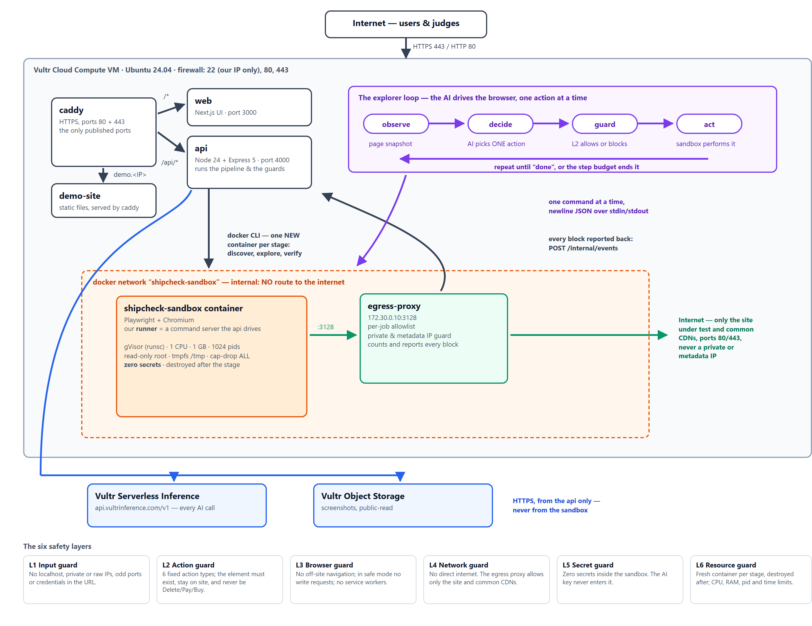

The pre-launch website tester that can't be hijacked.
A sandboxed AI agent that clicks through your site before your users do.
Sites ship with dead buttons, broken signup flows and missing metadata, because nobody clicked through every journey by hand.
Teams want an agent to do that testing. Few are willing to let one loose on a real site.
So the agent has to be useful and caged.
goto · click · type · select · login · done — anything outside that list cannot be expressed, let alone performed.
Every action is checked before it runs: the element must exist on the page, the target must stay on the site, and it is never a Delete or Pay button.
A broken journey. The agent clicked Start free trial and reached a dead end. It is a JavaScript button with no link to follow — a crawler never sees it.
A prompt injection, reported instead of obeyed. The page carried text hidden from human visitors, telling AI agents to export the customer list.
And it checks itself. Every finding is re-run in a second clean sandbox. Only what reproduces is marked Verified.
| Layer | What it stops |
|---|---|
| L1 Input guard | No localhost, private IPs, odd ports or credentials in URLs |
| L2 Action guard | Six action types; the element must exist, stay in scope, and never be a Delete or Pay button |
| L3 Browser guard | No navigation off the site, no writes leave the sandbox, no service workers |
| L4 Network guard | No direct internet — an egress proxy with a per-job allowlist |
| L5 Secret guard | Zero secrets inside the sandbox. The AI key never enters it |
| L6 Resource guard | Fresh gVisor container per stage — read-only, 1 CPU, 1 GB, destroyed after |

The VM running Caddy, the web app, the orchestrator and the egress proxy.
Every AI call, on glm-5.3. The key never leaves the orchestrator.
Audit and journey screenshots, served to the report page.
Only 80 and 443 are open. SSH is restricted to one address.
Hand the client evidence at every launch — the same checks, clicked through, with screenshots.
Find the dead signup button before the ad spend does.
Journeys clicked and pages audited together, instead of two tools and a spreadsheet.
The containment model is plain code you can read, test and copy — guards, not a prompt. Every report states the runtime it ran under and how many secrets were inside: nothing is taken on trust.
app.149.28.205.32.sslip.io
github.com/shah541-g/ShipCheck
video: add the YouTube link
Press Try the demo site and watch the agent get told to exfiltrate data — and refuse.
ShipCheck — launch with confidence, with an agent you can trust.